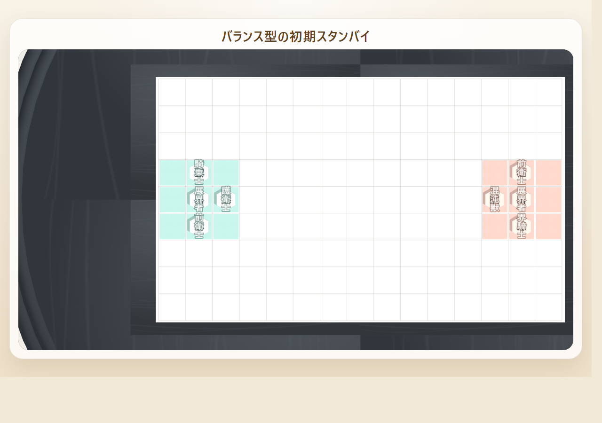

Field Guide
対象
2局目以降の参照用
読む目安
6〜8分で全体像
役割
見本と比較のページ
囲い
3つの対応駒で本陣をどう守るかを見る
戦型
受け切るか、先に圧をかけるかを決める
切替
攻め・受け・回収を局面で切り替える
UNFOLD 囲い・戦型ガイド
形を覚える。役割で読み替える。局面で切り替える。 このページは、初期スタンバイの囲い例や戦型の見方を、参照しながら使うための資料ページです。
囲いは名前より「何を守り、何を伸ばし、どこに圧を返すか」で見ると強くなります。
ここでは具体的な配置例と戦型の狙いを並べて、同じ囲いでも何を残して何を捨てているのかが読めるように整理します。
壁、退路、外への触り方の配分で性格が変わります。
同じ手札でも、型の選び方で主導権の取り方が変わります。
囲いが固まった後は、毎手の役割判断が差を作ります。

このページで分かること
- 守り重視・バランス・攻め寄りの囲い例
- 検証から見えた戦型と型の違い
- 攻め・受け・回収を使い分ける視点
左: 自分側
右: 相手側
画像はクリックで拡大
初心者向けの考え方だけ知りたい時は、別ページの 攻守ガイド から読むと入りやすいです。
読み方に迷ったら、まずはこの順で見ると整理しやすいです。
- 1. 3枚が担っている役割を見る
- 2. その囲いが薄くなる場所を覚える
- 3. 攻め・受け・回収の切り替え先を見る
QUICK PICKS
迷った時の最初の選び方
カードゲームやボードゲームの Field Guide のように、まず「今どれを採用するか」だけを先に決められるようにしています。理屈はその下の見本と比較表で追えます。
最初の3局は守り重視囲い
王前と横の安全を固めやすく、多少遅れても即負け筋を減らせます。迷ったらまずこれです。
中央へ触りたいならバランス囲い
守りを完全には捨てず、中盤へ出る通路も確保できます。慣れてきた後の基準形に向きます。
攻め寄りは相手が薄い時だけ
勝ち筋を早く作れますが、受け損ねがそのまま敗着になりやすいです。常用より局面限定が安全です。
まず1つ選ぶなら 守り重視囲い、次に試すなら バランス囲い、 攻め寄りは 相手の王前が薄いと読めた時だけ と覚えると導入がぶれにくくなります。
OPENING MINDSET
囲いを見る時の3つの役割
囲いは「どの駒を使っているか」だけでなく、「その3つがどこを守り、どこへ伸び、どこに圧を返しているか」で見ると読みやすくなります。
王の前を支える
最初の1枚は、王の正面に近い筋を受けられるかを重視します。ここが薄いと長射程や跳躍の着地点をすぐ作られます。
横の逃げ道を残す
王は中央から動くことがあります。動いた先でさらに詰まないように、左右どちらかに安全な退路を残しておきます。
相手の接続点を牽制する
3つ目の駒は、自分の守りを崩さない範囲で相手の一本道を切る役目です。守り切るだけでなく、相手に楽をさせない配置が大切です。

左: 自分側
右: 相手側
役割で見ると何が良いか
壁: 即負けを減らす
逃げ道: 王の可動域を残す
妨害: 相手の楽な形を消す
囲いを名前だけで覚えるより、何を守り、何を伸ばし、何を邪魔しているか の3点で見ると、手札が違っても応用が利きます。
同じ「守り重視」でも、王前が薄いなら守り寄りとは言えません。役割の置き方が優先です。
STANDBY GUIDE
初期スタンバイ囲いの見本
ここでは実際の初期スタンバイ局面をそのまま使って、守り寄り、バランス型、攻め寄りの3パターンを見比べます。下段のオリジナル駒例は、将棋駒の役割をそのまま読み替えたものです。

左: 自分側
右: 相手側
守り重視囲い
おすすめ: 堅守2 + 妨害1
画像で見るポイント
- 王の前に護衛士を置き、横に逃げ道を残しています。
- 外へ伸びる側撃士で、相手の接続点にも触れています。
- 最初に王の前を厚くする。
- 次に横の逃げ道を残す。
- 3つ目の役割で相手の伸び筋に触る。
将棋駒の例
金将
歩兵
銀将
オリジナル駒の例
護衛士
結界士
側撃士
最初の数局はこの形から入るのがいちばん安全です。
左: 自分側
右: 相手側
バランス囲い
目安: 堅守1 + 中継1 + 妨害1
画像で見るポイント
- 護衛士で王前を押さえつつ、騎乗士で中央への通路を作っています。
- 前衛士が外へ触る役を兼ねています。
- 守りを1枚に絞る代わりに、中盤へ出る通路を1本作る。
- ただし王前が空くなら採用しない。
- 攻め急ぎにならない範囲で中央へ圧をかける。
将棋駒の例
金将
桂馬
歩兵
オリジナル駒の例
護衛士
騎乗士
前衛士
慣れてきたら、守りを残したまま攻めの道を増やす形として使います。
左: 自分側
右: 相手側
攻め寄り囲い
目安: 中継2 + 退路1
画像で見るポイント
- 騎乗士と突撃士が中央へ並び、先に攻め筋を作っています。
- そのぶん王前の厚みは薄く、返し技に弱くなります。
- 相手本陣へ向かう道を早く作れる。
- その代わり、王前が薄くなりやすい。
- 初心者は「勝ち筋」より「即負け筋」が増えやすいので注意。
将棋駒の例
桂馬
飛車
歩兵
オリジナル駒の例
騎乗士
突撃士
前衛士
最初から常用するより、相手の守りが薄いと見えた時だけ選ぶくらいで十分です。
上の画像は実際の初期スタンバイ局面を切り出した例です。下段のオリジナル駒は同じ役割の読み替え例で、 特定の3枚セットを固定の正解として示しているわけではありません。
| 囲い | 向いている局面 | 強み | 崩れやすい点 |
|---|---|---|---|
| 守り重視囲い | 初戦、相手の型が読めない時 | 即負け筋を減らしやすい | 攻め返しが遅れやすい |
| バランス囲い | 互角の立ち上がり、中央戦をしたい時 | 受けと展開を両立しやすい | 王前を薄くしやすい |
| 攻め寄り囲い | 相手の守りが薄い、主導権を急ぎたい時 | 短手数で勝ち筋を作りやすい | 受け損ねが即敗着になりやすい |
囲いを名前で覚えるより、「この3つは何を守り、何を伸ばしているか」 で見ると、引いた手札が違っても応用しやすくなります。
ANTI PATTERNS
避けたい初期スタンバイ
良い囲いを見るだけだと、「どこから危険になるか」が逆にぼやけることがあります。ここでは初心者がやりがちな崩れ筋を、悪い例として先に固定します。

左: 自分側
右: 相手側
王前が薄い
何が悪いか
- 中央へ伸ばす駒を優先しすぎて、王前の受け駒がありません。
- 短射程でも届く筋が残り、受けが後手に回ります。

左: 自分側
右: 相手側
横の退路がない
何が悪いか
- 王の横まで自分で塞いでいて、逃げ先が作れていません。
- 王前が破られた瞬間に一気に詰み筋へ入ります。

左: 自分側
右: 相手側
3つとも攻めに寄せる
何が悪いか
- 攻め筋は増えますが、守り役が消えて返し技に極端に弱くなります。
- 初心者が「押せている」と誤解しやすい典型です。
| 悪い形 | 起きやすい負け筋 | 直し方 |
|---|---|---|
| 王前が薄い | 王捕獲を最短で許す | 1枚を王前へ戻し、中央へ出る駒を1枚減らす |
| 横の退路がない | 王を動かした後に詰みやすい | 横1マスぶんの退路役を必ず残す |
| 3つとも攻めに寄せる | 受け直し不能のまま反撃を浴びる | 3つ目を攻め役ではなく妨害役にする |
BATTLE PATTERNS
検証から見えた戦型と型
まだ歴史の浅いゲームなので、ここでの定石は固定の正解ではありません。NPC 同士の大量対局から「崩れにくかった考え方」を抜き出した、育成中の型メモとして読んでください。
攻め vs 守り
先手が中央へ圧力をかけ、後手が即負けを消し続ける戦型です。 先手は勝ち筋を急ぎ、後手は「王」と「本陣中央」の両方を同時に見る必要があります。
守り vs 攻め
守る側が本陣前を厚くし、相手の展開図が置けない形を作ってから反撃する型です。 検証では、後手が守り切って反撃する成功例が多く出ました。
バランス戦型
先手後手の勝率差が比較的小さく、練習用の基準にしやすい戦型です。 迷ったら、壁1枚、逃げ道1枚、圧力1枚の配分から始めると読みやすくなります。

速攻戦型
攻め駒と長い展開図を早く通す戦型です。 決まると短手数で勝てますが、受けを1手間違えると逆に王を取られやすいです。
| 型 | 狙い | 崩れやすい点 |
|---|---|---|
| 本陣接続囲い | 初期スタンバイの展開図3枚を本陣に接続し、対応駒で王の前と横を厚くする。 | 壁だけ作ると反撃手がなく、相手に中央を伸ばされる。 |
| 中央圧力型 | 相手本陣中心へ展開図を近づけ、上書き勝利と王捕獲を同時に匂わせる。 | 王の前が薄くなると、相手の1手勝ちを許しやすい。 |
| 横受け型 | 王の横に逃げ道を残し、直線駒や跳び駒の刺さりを減らす。 | 角だけ接する展開図は接続にならないため、1辺で接しているか必ず確認する。 |
| 反撃受け型 | 受けながら次の手で相手王や本陣中心に圧力を返す。 | 受けだけを続けると山札を使っても主導権を取り返しにくい。 |
TACTICAL THEMES
攻め・受け・回収の使いどころ
このゲームは「勝ち筋を通す手」と「負け筋を消す手」が毎ターンせめぎ合います。囲いを覚えた後は、毎手どの役割に切り替えるかが実戦の差になります。

攻め方: 2つの勝ち筋を同時に作る
王を取る筋だけ、または本陣中央を上書きする筋だけでは受けられやすいです。 強い攻めは、王を逃がすと本陣中央が空き、中心を守ると王が詰む形を作ります。

受け方: 即負けを全部消す
受けは「一番怖い手を1つ消す」だけでは足りません。 相手が次に勝てる手が複数あるなら、王の捕獲、本陣中央、展開図上書きの全てを同時に減らします。

回収: 逃げではなく形の作り直し
駒回収は狙われた駒を助けながら持駒に戻す手です。 展開図回収は、駒が乗っておらず上書きもされていない安全な図を持ち展開図に戻し、次の接続や受けに再利用する手です。
攻
相手本陣中心に近い展開図を置く前に、自分の王が次の手で取られないか確認します。
受
相手の展開図を置けなくする防御は強いです。自陣の外側に「置かれると負ける余白」を残さないようにします。
回
回収は手番を使います。回収後に相手の即勝ちが残るなら、先に駒移動・持駒打ち・展開図で受けます。
囲いと戦型のページは、「この形なら何が強くて、どこが薄いか」 を見返す参照用です。 実戦判断の基本に戻りたい時は 攻守ガイド を合わせて見るのがおすすめです。
READ NEXT
次に読むページ
形の見方を押さえたら、実戦での攻めと守りの判断に戻ると理解がつながりやすくなります。